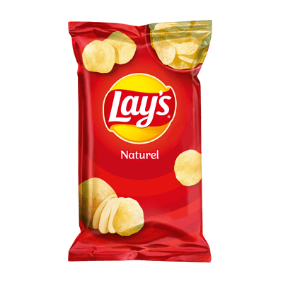

Lay's Chips
Simpelweg genieten, dat is waar de producten van Lay's voor staan. Bereid met echte ingrediënten en verkrijgbaar in onweerstaanbaar lekkere smaken!
Lees meer

Lees meer
Simpelweg genieten, dat is waar de producten van Lay's voor staan. Bereid met echte ingrediënten en verkrijgbaar in onweerstaanbaar lekkere smaken!
Lees meerDe SuperChips ribbels laten je extra genieten van jouw vertrouwde smaken maar dan met intense smaak en harde kraak. Open de zak en beleef het zelf!
Lees meerSimpelweg genieten, dat is waar de producten van Lay's voor staan. Bereid met echte ingrediënten en verkrijgbaar in onweerstaanbaar lekkere smaken!
Lees meerVerfijnde licht knapperige aardappelzoutjes uit de oven met 40% minder vet*.
Lees meerHeerlijke krokante granenbiscuits uit de oven met 40% minder vet*.
Lees meerBeleef een ware smaaksensatie met Lay's Sensations! Extra dikke chipjes met extra veel smaak, om intens van te genieten.
Lees meerSamen met de beste smaakexperts hebben we chips gecreëerd die perfect samen gaan met verschillende soorten bier. Zoek niet langer naar de ideale chips voor bij je bier en geniet van deze perfecte combinatie.
Lees meerDe bekende stoere en brosse klassieker! Dit zoutje wordt gemaakt van de lekkerste maïs en de beste tarwe.
Lees meerJe hoeft nu niet meer te kiezen, want we hebben een mix gemaakt van verschillende chipjes! Vier vormpjes met ieder hun eigen bite gecombineerd in één zak
Lees meerGrills is overheerlijk en bros. Deze stoere traktatie met de geribbelde vorm wordt gemaakt van de lekkerste maïs en de beste aardappelen. Met de échte grillsmaak van gerookte bacon.
Lees meerLay's Mama Mia's is een temperamentvolle traktatie met een Italiaanse touch.
Lees meerHeerlijke lichte chips met 33% minder vet dan normale chips. Ideaal voor de bewuste genieter en nog steeds onweerstaanbaar lekker.
Lees meerVerschillende zakjes Lay's in onze populairste smaken. De kleine zakjes zijn handig om uit te delen en lekker als tussendoortje.
Lees meerLay's en Cheetos hebben al hun favoriete chips & snacks geselecteerd voor de Fun Mix.
Lees meerLay's Sticks zijn de lekkere fritessticks van Lay's. Lay's Sticks hebben dezelfde heerlijke smaak als Lay's chips en zijn verkrijgbaar in de smaken Naturel en Paprika.
Lees meerOntdek de 2 onweerstaanbare smaken van Lay's STAX. Door de handige en hersluitbare verpakking behoudt de chips zijn versheid en heerlijke crunch op ieder moment van de dag.
Lees meerBewust genieten, dat is waar de producten van Lay's Oven Baked voor staan. Probeer nu onze nieuwe Lay's Oven Baked with Veggie!
Lees meer